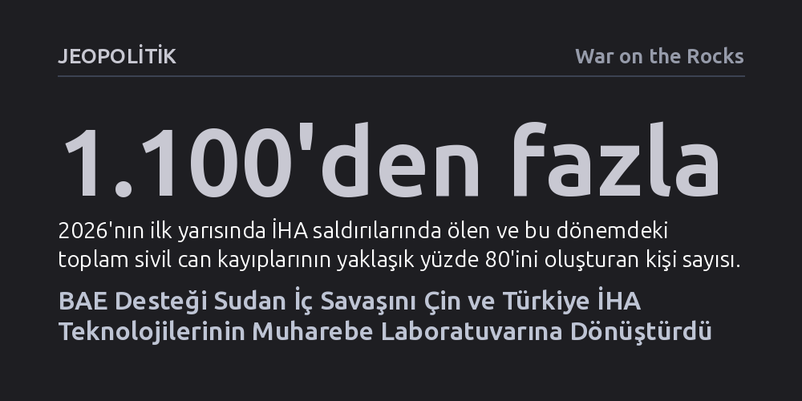

JEOPOLITIK · War on the Rocks · 2026-10-16
Birleşik Arap Emirlikleri'nin Hızlı Destek Kuvvetleri'ne sağladığı gelişmiş Çin sistemleri ile Sudan ordusunun kullandığı Türk hava savunma ve İHA'ları, Sudan'ı küresel bir askeri teknoloji laboratuvarına çevirdi. Bu yayılma, sivillerin geri dönüşünü engellerken Sahel ve Kızıldeniz hattında bölgesel güvenliği sarsıyor.
Sudan'daki çatışmanın yerel bir kriz olmaktan çıkıp devlet dışı milislerin gelişmiş insansız hava araçlarıyla donatıldığı ve küresel güçlerin sistemlerini sınadığı tehlikeli bir vekil savaşı laboratuvarına dönüştüğünü gösteriyor.

Nisan 2023'te patlak veren Sudan iç savaşı, başlangıçta Sudan Silahlı Kuvvetleri ile Cancavit kökenli Hızlı Destek Kuvvetleri (HDK) arasındaki sokak çatışmalarından ibaret görünüyordu. Ancak 2026 yılına gelindiğinde savaşın niteliği kökten değişti. Sudan ordusunun Mart 2025'te başkent Hartum'u geri alması ve Mayıs 2026'da sivil uçuşların yeniden başlaması milyonlarca insanda barış umudu doğurmuş olsa da, kontrolsüz biçimde yayılan insansız hava aracı (İHA) saldırıları hayatı felç etmeye devam ediyor.
Bu yeni savaş biçiminin faturasını doğrudan siviller ve kritik altyapı tesisleri ödüyor. Birleşmiş Milletler verilerine göre 2026'nın ilk yarısında kaydedilen sivil ölümlerinin yaklaşık yüzde seksenine (1.100'den fazla insan) doğrudan İHA saldırıları neden oldu. Ülkenin en büyük hidroelektrik tesisi olan Merove Barajı, petrol depoları ve havalimanları defalarca vuruldu; Hartum gece çöktüğünde tamamen karanlığa gömülen bir harabeye dönüştü. Sudan Enerji Bakanlığı'nın paylaştığı verilere göre, enerji sektörünün çatışmalar boyunca uğradığı maddi yıkım 14 milyar doları buldu. Eskiden cephe hatlarından yüzlerce kilometre uzakta, güvenli bir insani yardım merkezi sayılan Port Sudan dahi uzun menzilli intihar dronlarıyla hedef alınarak elektriksiz bırakıldı.
Sudan semalarındaki teknolojik dönüşüm basamak basamak ama büyük bir hızla ilerledi. Savaşın ilk aylarında taraflar yalnızca kentsel çatışmalarda keşif ve hafif mühimmat bırakma amacıyla kullanılan kısa menzilli ticari dronlarla yetiniyordu. Sudan ordusu, Ukrayna'nın teknik desteğiyle sivil dronları silahlandırarak meskun mahalde geçici bir taktik üstünlük kurdu. Fakat bu kısıtlı kullanım, HDK'nin uzun menzilli stratejik hava araçlarına erişmesiyle aniden küresel bir teknoloji yarışına evrildi.
Sudan sahası, kısa sürede Çin ve Türk savunma sanayii ürünlerinin doğrudan birbirini sınadığı canlı bir muharebe laboratuvarına dönüştü. Sudan Silahlı Kuvvetleri, Türkiye'den tedarik ettiği Bayraktar TB2 ve Akıncı sistemleriyle HDK'nin batıdaki kalelerini ve lojistik hatlarını aralıksız vurdu. Milisler ise bu hava üstünlüğüne Birleşik Arap Emirlikleri üzerinden elde ettikleri Çin yapımı FK-2000 hava savunma sistemleriyle yanıt verdi. Janes istihbarat raporları, 2025 sonbaharına kadar üç Akıncı'nın düşürüldüğünü ve enkaz bölgesinde Çin füze parçalarının tespit edildiğini belgeledi.
Bunun üzerine ordu hava savunmasını Türk yapımı HİSAR-A sistemleriyle güçlendirirken, Şubat 2026'da Güney Kordofan'da bir Bayraktar Akıncı'nın milislerin elindeki Çin menşeili FK-2000 bataryasını imha etmesi bu teknolojik düellonun ulaştığı boyutu gözler önüne serdi. İki küresel üreticinin taarruz ve savunma platformları, Sudan'ın üzerinde sürekli bir karşı-tedbir geliştirme sarmalına girdi.
Devlet dışı bir etnik milis yapılanması olan HDK'nin bu denli karmaşık ve stratejik hava platformlarını kendi imkânlarıyla tedarik edip işletmesi mümkün değil. Bağımsız araştırma laboratuvarları, milislerin Nyala Havalimanı'nda Çin yapımı en az altı adet CH-95 veya FH-95 tipi stratejik İHA konuşlandırdığını ortaya koydu. 250 kilometreye varan operasyonel menzile sahip bu araçların Birleşik Arap Emirlikleri aracılığıyla Çinli şirketlerden alındığı, dahası Emirlik personelinin Çad sınırındaki üslerden bu araçları bizzat yönettiği saygın basın organları ve Birleşmiş Milletler raporlarıyla belgelendi. Ayrıca ABD Hazine Bakanlığı, milislere İHA pilotluğu ve taktik eğitimi veren Kolombiyalı paralı asker şebekelerine yaptırım uyguladı.
Bu durum sadece Sudan için değil, tüm Afrika Boynuzu ve Sahel kuşağı için tehlikeli bir emsal teşkil ediyor. HDK saflarında savaşan ve Sahel genelindeki göçebe Arap kabilelerinden toplanan paralı askerler, edindikleri gelişmiş İHA kabiliyetini sınırlar ötesine taşıyabilir. Bu ileri teknolojinin bölgede faal olan El-Kaide ve IŞİD bağlantılı militan örgütlerin eline geçme ihtimali ciddi bir felaket senaryosu oluşturuyor. Öte yandan Kızıldeniz kıyısındaki liman altyapısının hedef alınması, Yemen'deki Husi saldırılarının ardından küresel ticaretin can damarı olan deniz koridorunu tamamen kapanma riskiyle karşı karşıya bırakıyor.
HDK'nin askeri cephelerden uzaktaki sivil yerleşimleri ve altyapıyı vurması hedefsiz bir öfkenin değil, bilinçli bir caydırma politikasının ürünü. Uluslararası Göç Örgütü verilerine göre, savaş süresince yerinden edilen yaklaşık 4,65 milyon sivil evlerine dönmeye başladı. Ancak elektrik şebekelerine, hastanelere ve sığınma merkezlerine yönelen İHA darbeleri, bu dönüş dalgasını durdurmayı amaçlıyor. Ekim 2026'da El-Ubeyyid'deki bir sığınma evine düzenlenen ve 13 çocuğun can verdiği saldırı, milislerin sivil yaşamı yaşanmaz kılarak toplumu tahliye olmaya zorlama taktiğini acı biçimde özetliyor.
Sahada yaşanan bu teknolojik teröre karşılık uluslararası diplomasi tam bir tıkanmışlık yaşıyor. Birleşmiş Milletler Güvenlik Konseyi'nin Darfur'a yönelik yirmi yıllık silah ambargosu hiçbir somut sonuç üretmezken, ambargonun tüm Sudan'ı kapsayacak şekilde genişletilmesi önerileri Çin ve Rusya'nın vetolarına takılıyor. Sudan hükümeti de haklı olarak devlet ile soykırımcı bir milisi aynı kefeye koyacak genel bir ambargoyu reddediyor. Mevcut Silah Ticareti Anlaşması (ATT) hükümleri işletilmedikçe, Çin'in silah saptırma eylemlerine göz yumulduğu ve BAE gibi aracı aktörlere caydırıcı yaptırımlar uygulanmadığı müddetçe, Sudan'ın bir silah laboratuvarı olarak kullanılması engellenemeyecek.